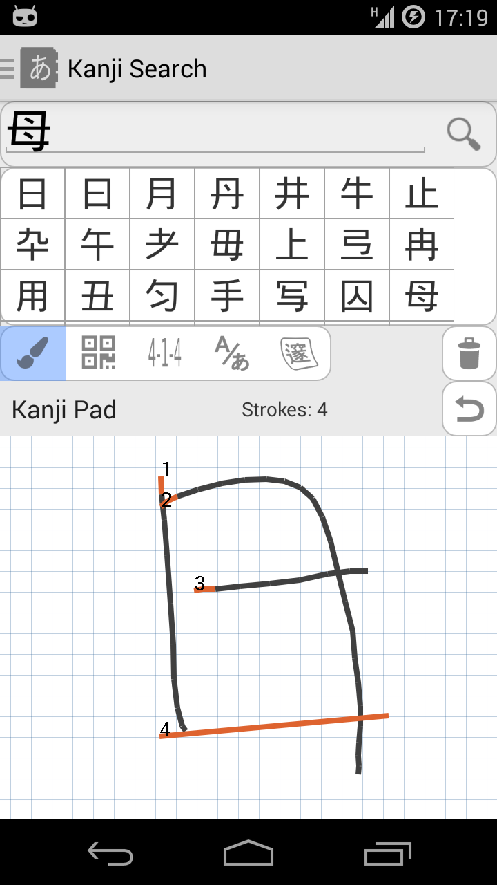

Not As Strict
Stroke order and stroke count requirements are not as strict as with the internal kanjipad.
Awesome. Aedicts normal kanjipad barely worked for me. this one here has no problem with my complete ignorance towards stroke order and even finds relatively complex kanji without a problem.
Mathias Dietrich
It's much better than before. Normally I use Google Translate's kanji drawing feature. Still, I value that this one is integrated into aedict3 (less app switching - faster usage) and that it's off-line.
Daniel Sangorrin
MUCH BETTER!!! After the latest update it's much much faster, and quite accurate.
Jason Allen

Provides more accurate kanjipad for Aedict3. It knows a lot more kanjis than the internal kanjipad.
To activate this enhanced kanjipad, simply install the Aedict app and activate the "Aedict Ultimate" subscription. The enhanced kanjipad will be activated automatically.
Stroke order and stroke count requirements are not as strict as with the internal kanjipad.